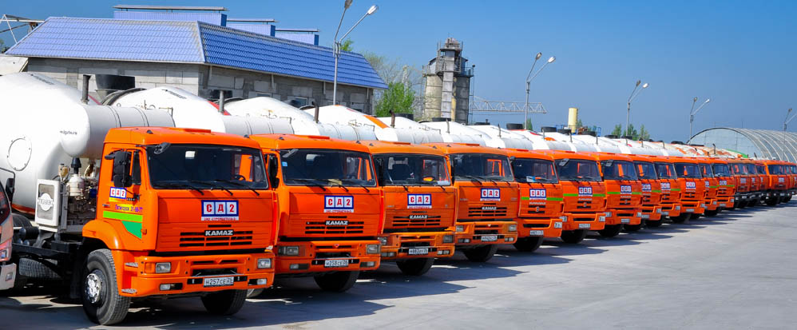
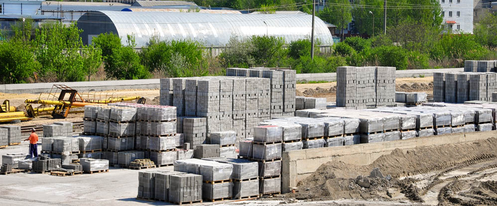
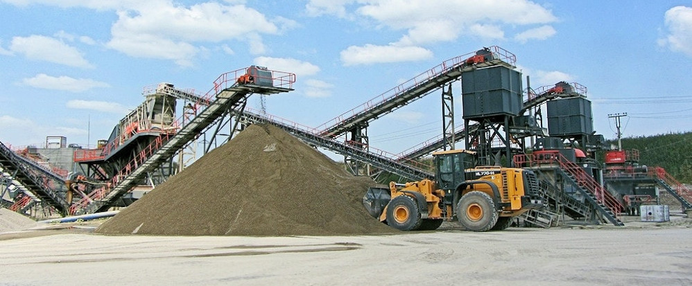

Продукция завода
Четыре производства
на одной площадке
Бетон, железобетон, асфальт и инертные материалы — из одних рук и с одним паспортом качества. Цены зависят от объёма и адреса доставки, поэтому считаем по запросу — в течение рабочего дня.

Бетон и раствор с доставкой
Все марки от М100 до М1000, включая самоуплотняющиеся и высокопрочные. Подвижность подбираем под плечо доставки, сохраняемость — от 1 до 8 часов по вашему выбору.
по запросуза м³ с доставкой Узнать цену → 02
ЖБИ и тротуарная плитка
19 групп изделий: кольца и плиты колодцев, ФБС, бордюры, дорожные плиты, лотки теплотрасс, стеновые блоки. Плитка и малые формы — на немецком прессе ZENITH, морозостойкость до F400.
по прайсувышлем с расчётом Смотреть каталог → 03
Асфальтобетонные смеси
Собственный асфальтобетонный участок и минеральный порошок своего производства. Покупают строительные и дорожные организации, управляющие компании и частные лица.
по запросуза тонну Узнать цену → 04
Щебень и песок с карьера
Единственный в регионе кубовидный щебень 1-й категории и фракционные мытые пески. Промываем сырьё на оборудовании Sandvik — загрязнений не более 0,1 %.
по запросуза тонну · самовывоз или доставка Узнать цену →